A2A
A2A ADK
ADK Cloud Run
Cloud Run
 Google Developer GroupBangkok · DevFest 2026
Google Developer GroupBangkok · DevFest 2026
Agenda
- 01Why A2ASilos, A2A vs MCP & core principles
- 02Agent Cards & TasksDiscovery, lifecycle, artifacts & streaming
- 03A2A in ADKExpose with
to_a2a()& call viaRemoteA2aAgent - 04Scale & SecurityAuth, Cloud Run architecture & best practices
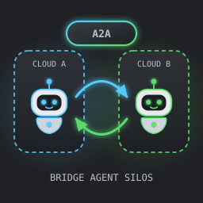
Why
A2A
Breaking silos across frameworks,
teams and clouds
Enterprise agents live in isolated silos
TravelADK · Cloud Run BillingLangGraph · GKE
BillingLangGraph · GKE HR / ITCrewAI · SaaS
HR / ITCrewAI · SaaSEvery new pair of agents needs custom HTTP glue, auth plumbing, polling logic and error handling.
With A2A1 open protocolTravelADK · Cloud RunBillingLangGraph · GKE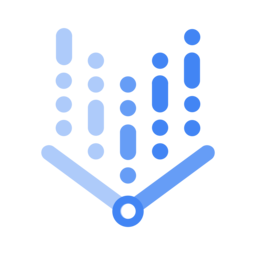
HR / ITCrewAI · SaaSEach team builds, deploys and scales its own agent — any other agent can discover and delegate to it.
A2A and MCP solve two different axes
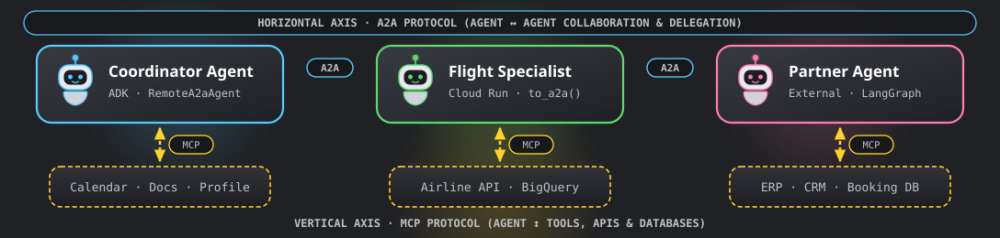
A2A · Horizontal

MCP · Vertical
Use both together
A2A vs MCP at a glance
| Dimension | A2A (Agent2Agent) | MCP (Model Context Protocol) |
|---|---|---|
| Direction | Agent ↔ Agent (horizontal) | Agent ↕ Tool / Data (vertical) |
| Interaction | Goal-driven tasks, multi-turn collaboration | Deterministic function & resource calls |
| Visibility | Opaque — internals, prompt & tools stay private | Explicit JSON schema for every tool parameter |
| Duration | Instant to long-running (SSE & push webhooks) | Short request/response tool invocations |
| Discovery | /.well-known/agent.json (Agent Card) | tools/list, resources/list |
| Best for | Cross-team, cross-framework, cross-org delegation | Giving an LLM structured access to APIs & DBs |
Built for real-world, enterprise agents
Opaque by default
Agents collaborate through messages and artifacts without leaking prompts, memory, proprietary logic or internal tools.
Built on open web standards
HTTP, JSON-RPC 2.0, Server-Sent Events (SSE) and OpenAPI-style auth — works cleanly with existing API gateways and proxies.
Async & long-running native
Handles sub-second answers, multi-minute research and human-in-the-loop approvals with stateful tasks and webhooks.
Vendor-neutral & multimodal
Apache 2.0 protocol under the Linux Foundation. Exchanges text, files, images, audio and structured JSON across any framework.
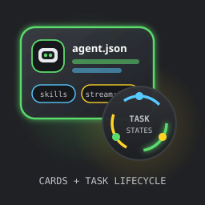
Agent Cards
& Tasks
Discovery, lifecycle,
artifacts and streaming
Every A2A agent publishes an /.well-known/agent.json
{
"name": "flight_specialist",
"description": "Searches flights and compares fares.",
"url": "https://flights.example.run.app/",
"version": "1.0.0",
"capabilities": {
"streaming": true,
"pushNotifications": false
},
"defaultInputModes": ["text/plain"],
"defaultOutputModes": ["text/plain", "application/json"],
"skills": [{
"id": "search_flights",
"name": "Flight Search",
"tags": ["travel", "flights", "pricing"],
"examples": ["Find non-stop flights BKK to NRT"]
}],
"securitySchemes": { "google_oidc": { "type": "openIdConnect" } }
}
1 · Digital business card
Published at a predictable well-known URI so any client or registry can inspect it with oneGET.2 · Skills drive routing
description, skills and examples tell an orchestrator LLM when to delegate here.3 · Capabilities & auth
Declares streaming, MIME types and required auth schemes before the first task is sent.From discovery to deliverable in 4 steps
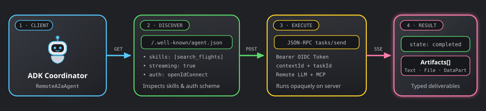
Groups related turns across a multi-turn session.
Tracks one unit of work; supports
tasks/get & cancel. Gemini
Claude
Gemini
Claude
Tasks move through a clear state machine
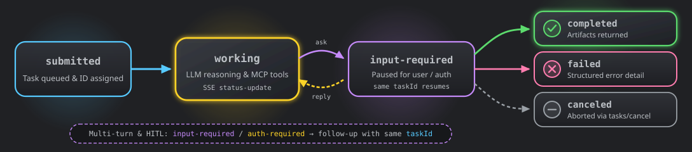
submitted → working streams live progress events via SSE.input-required or auth-required waits for follow-up on same taskId.completed (artifacts), failed (error), or canceled.Messages carry turns; Artifacts carry deliverables
Message & Parts
In-flight turnsEvery turn (role: "user" | "agent") holds an array of typed Parts:
bytes or signed uri.Artifacts
Task outputsImmutable or streamed deliverables produced by a completed task:
"artifacts": [{
"artifactId": "itinerary-01",
"name": "tokyo_trip.json",
"parts": [
{ "kind": "text", "text": "3-day Tokyo plan" },
{ "kind": "data", "data": { "flights": [...], "total_thb": 18500 } }
]
}]
DataPart for machine-readable handoffs so downstream agents don't have to parse prose.Three ways to receive results
1 · Sync Request
Single message/send call. Server holds the request and returns the finished Task.
2 · SSE Streaming
message/stream pushes live status-update and partial artifact-update events.
3 · Push Webhooks
Client registers a callback URL. Server POSTs updates asynchronously when state changes.
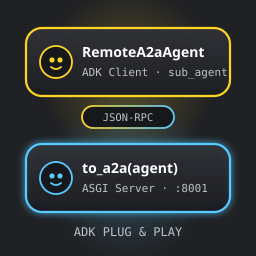
A2A in
ADK
Expose any agent with to_a2a()
and call it via RemoteA2aAgent
Expose any ADK agent in 3 lines with to_a2a()
from google.adk.agents import LlmAgent
from google.adk.a2a.utils.agent_to_a2a import to_a2a
flight_agent = LlmAgent(
name="flight_agent",
model="gemini-2.5-flash",
description="Searches flights and compares fares.",
instruction="Find the best flights for the user.",
tools=[search_flights],
)
# Turn any ADK agent into an A2A ASGI app
a2a_app = to_a2a(flight_agent, port=8001)

1 · Install extra
pip install "google-adk[a2a]"Adds the official
a2a-sdk and ASGI server helpers.2 · Run with uvicorn
uvicorn flight_agent.agent:a2a_app --host 0.0.0.0 --port 80013 · Auto-generated card
/.well-known/agent.json from your agent's name, description and tools.Customize the Agent Card for production
from a2a.types import AgentCard, AgentSkill, AgentCapabilities
from google.adk.a2a.utils.agent_to_a2a import to_a2a
custom_card = AgentCard(
name="flight_agent",
url="https://flight-agent-xyz.run.app/",
version="1.2.0",
description="Real-time flight search and fare comparison.",
capabilities=AgentCapabilities(streaming=True),
default_input_modes=["text/plain"],
default_output_modes=["text/plain"],
skills=[AgentSkill(
id="flight_search", name="Flight Search",
description="Find routes and prices by date.",
tags=["travel", "flights"],
)],
)
a2a_app = to_a2a(flight_agent, agent_card=custom_card)
Public HTTPS URL
url (or host & protocol="https") so clients don't get localhost.Rich skills metadata
AgentSkill descriptions & examples boost routing accuracy in parent coordinators.Verify with curl
curl https://.../.well-known/agent.jsonadk api_server --a2a can also serve multiple agents in one directory with A2A enabled.Consume any remote agent with RemoteA2aAgent
from google.adk.agents.remote_a2a_agent import (
RemoteA2aAgent,
AGENT_CARD_WELL_KNOWN_PATH,
)
remote_flight = RemoteA2aAgent(
name="flight_agent",
description="Remote specialist for searching flights.",
agent_card=(
"https://flight-agent-xyz.run.app"
f"{AGENT_CARD_WELL_KNOWN_PATH}"
),
# Optional: custom httpx_client for auth & timeouts
)
1 · Drop-in BaseAgent
RemoteA2aAgent behaves just like a local ADK sub-agent — plug it into sub_agents, SequentialAgent or ParallelAgent.2 · Automatic translation
Events into A2A Messages and streams remote Tasks back as ADK events.3 · Zero boilerplate
Mix local and remote agents in one Coordinator
from google.adk.agents import LlmAgent
root_agent = LlmAgent(
name="travel_coordinator",
model="gemini-2.5-flash",
instruction=(
"Plan complete trips. Delegate flight "
"search to flight_agent, hotels to "
"hotel_agent, and check budget locally."
),
sub_agents=[
local_budget_agent, # in-process Python
remote_flight, # RemoteA2aAgent :8001
remote_hotel, # RemoteA2aAgent :8002
],
)
One ADK coordinator, any framework behind A2A
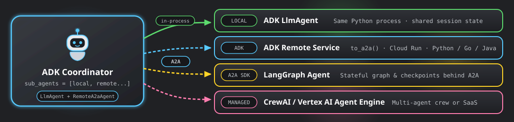
ADK
A2A SDK
Python / Go / Java
Cloud Run
Vertex AI
Gemini
Claude
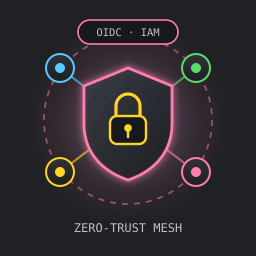
Scale &
Security
Authentication, Cloud Run microservices
and production best practices
Authenticate every hop across agent boundaries
1 · Card-declared schemes
securitySchemes in the Agent Card follows OpenAPI: OAuth2, OIDC, Bearer JWT or API Key. Credentials are never inside the card.

2 · Service-to-service IAM
On Cloud Run, disable public access and attach a GCP OIDC Identity Token via a custom httpx.AsyncClient in RemoteA2aAgent.
3 · User identity & least privilege
Use auth-required task state to request user-scoped OAuth tokens when a remote agent acts on private user data.
4 · Transport & allow-lists
Enforce HTTPS/mTLS, verify Agent Card origins against an allow-list, and guard against prompt injection in remote replies.
Distributed agents on Cloud Run & Agent Engine
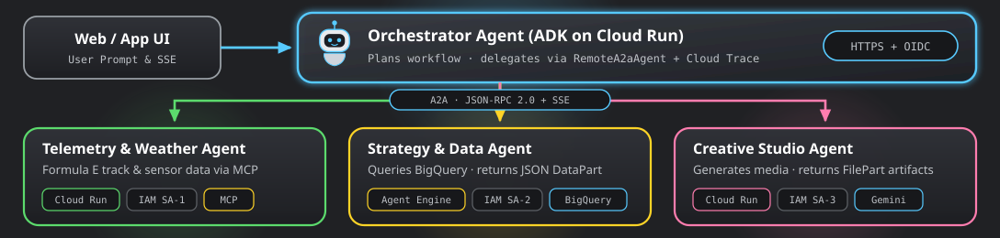
Google Cloud
Cloud Run
Agent Engine
Per-agent IAM
MCP Tools
Gemini
Production checklist for A2A systems
- ✓Write sharp descriptions & skills. Coordinators route purely on Agent Card metadata.
- ✓Set explicit timeouts & retries on the
httpx_clientpassed toRemoteA2aAgent. - ✓Enable SSE streaming for multi-step remote agents so proxies never time out.
- ✓Propagate trace & context IDs across hops for end-to-end Cloud Trace debugging.
- ✓Version your Agent Cards and keep output
DataPartschemas backward-compatible. - !Don't over-split into A2A. Simple stateless functions belong in local tools or MCP.
- !Don't ship
localhostURLs in your Agent Card or leave Cloud Run unauthenticated. - !Don't leak secrets or raw stack traces in task errors or returned artifacts.
Discover, Delegate, Interoperate
1 · Discover
Publish skills, capabilities and auth at /.well-known/agent.json — no hardcoded glue.
2 · Delegate
Send stateful tasks with Sync, SSE or Push. Exchange text, files and JSON Artifacts.
3 · Interoperate
Expose with to_a2a(), call with RemoteA2aAgent, connect ADK to any framework on Cloud Run.
/.well-known/agent.json
to_a2a() & RemoteA2aAgent
A2A + MCP
Cloud Run + OIDC
Zero-Trust IAM
to_a2a(root_agent, port=8001) and inspect its Agent Card.Read more and try it
ADK A2A Guide
adk.dev/a2a/A2A Protocol Specification
a2a-protocol.orgCodelab: Multi-Agent A2A on Cloud Run
codelabs.developers.google.comVertex AI Agent Engine & A2A
Vertex AI Agent Engine docsADK + MCP Tools
adk.dev/tools/mcp-tools/A2A Official Samples & SDK
github.com/a2aproject/A2AThank you
Q & A
Punsiri Boonyakiat
Google Developer Expert in Cloud AI
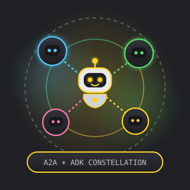